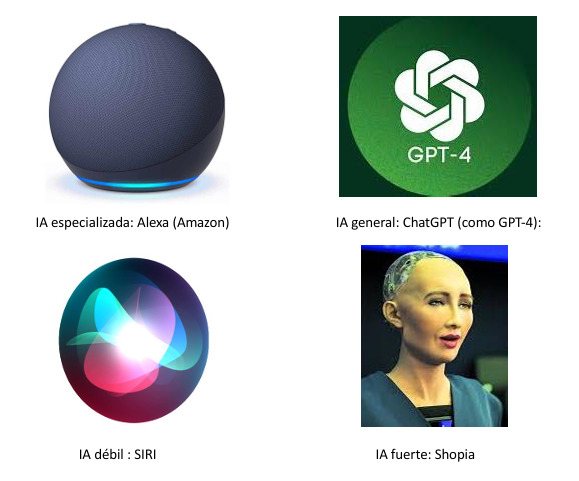

¿Qué es la IA?
La Inteligencia Artificial (IA) es un campo de la informática que se centra en la creación de sistemas capaces de realizar tareas que normalmente requieren inteligencia humana. Estas tareas incluyen el aprendizaje, la resolución de problemas, la percepción y la comprensión del lenguaje natural. La IA se divide en dos grandes categorías: IA débil, que está diseñada para realizar tareas específicas, y IA fuerte, que tiene la capacidad de realizar cualquier tarea cognitiva que un ser humano pueda realizar.

Tipos de IA
Existen varios tipos de Inteligencia Artificial, entre los más destacados se encuentran:
- IA Débil: Diseñada para tareas específicas y limitadas, como los asistentes virtuales o los sistemas de recomendación.
- IA Fuerte: Se refiere a sistemas que tienen la capacidad de entender, razonar y aprender de manera similar a un ser humano. Esta IA aún está en desarrollo y es más teórica.
- IA General: Un tipo de IA que puede realizar cualquier tarea cognitiva que un ser humano pueda hacer. Es un objetivo a largo plazo para los investigadores en IA.
- IA Especializada: Se enfoca en resolver problemas específicos dentro de un dominio particular, como el diagnóstico médico o la conducción autónoma. 
Ventajas de la IA
Existen varios tipos de Inteligencia Artificial, entre los más destacados se encuentran:
- Optimizacion de procesos: En industrias como la manufactura, la logística y la energía, la IA puede ayudar a optimizar procesos para mejorar la eficiencia y reducir costos.
- Automatización de Tareas Repetitivas: Para tareas rutinarias y repetitivas, como la entrada de datos o el control de inventarios, la IA puede mejorar la eficiencia y reducir el riesgo de errores.
- Riesgo de Desplazamiento Laboral: En entornos donde el uso de IA puede llevar al desplazamiento significativo de trabajadores sin ofrecer alternativas adecuadas, es importante considerar las implicaciones sociales y económicas.
- Privacidad y Seguridad: Cuando se maneja información extremadamente sensible o confidencial, el uso de IA puede plantear riesgos de seguridad y privacidad que deben ser cuidadosamente gestionados.

¿En qué casos se debe usar las IA y en que casos no?
Los 2 primeros son en casos en donde si es bueno y los ultimos dos son en donde no.